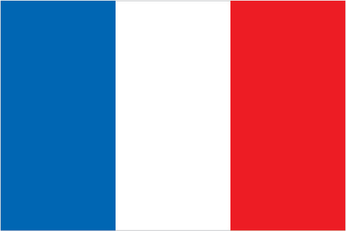
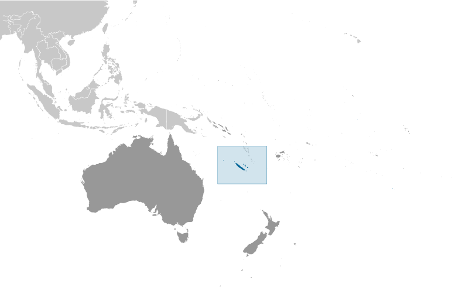

Australia-Oceania :: NEW CALEDONIA
Introduction :: NEW CALEDONIA
-
Settled by both Britain and France during the first half of the 19th century, the island became a French possession in 1853. It served as a penal colony for four decades after 1864. Agitation for independence during the 1980s and early 1990s ended in the 1998 Noumea Accord, which over a period of 15 to 20 years will transfer an increasing amount of governing responsibility from France to New Caledonia. The agreement also commits France to conduct a referendum between 2014 and 2018 to decide whether New Caledonia should assume full sovereignty and independence.
Geography :: NEW CALEDONIA
-
Oceania, islands in the South Pacific Ocean, east of Australia21 30 S, 165 30 EOceaniatotal: 18,575 sq kmland: 18,275 sq kmwater: 300 sq kmcountry comparison to the world: 156slightly smaller than New Jersey0 km2,254 kmterritorial sea: 12 nmexclusive economic zone: 200 nmtropical; modified by southeast trade winds; hot, humidcoastal plains with interior mountainsmean elevation: NAelevation extremes: lowest point: Pacific Ocean 0 mhighest point: Mont Panie 1,628 mnickel, chrome, iron, cobalt, manganese, silver, gold, lead, copperagricultural land: 10.4%arable land 0.4%; permanent crops 0.2%; permanent pasture 9.8%forest: 45.9%other: 43.7% (2011 est.)100 sq km (2012)cyclones, most frequent from November to Marchvolcanism: Matthew and Hunter Islands are historically activeerosion caused by mining exploitation and forest firesconsists of the main island of New Caledonia (one of the largest in the Pacific Ocean), the archipelago of Iles Loyaute, and numerous small, sparsely populated islands and atolls
People and Society :: NEW CALEDONIA
-
275,355 (July 2016 est.)country comparison to the world: 184noun: New Caledonian(s)adjective: New CaledonianKanak 40.3%, European 29.2%, Wallisian, Futunian 8.7%, Tahitian 2%, Indonesian 1.6%, Vietnamese 1%, Ni-Vanuatu 0.9%, other 16.2% (2009 est.)French (official), 33 Melanesian-Polynesian dialectsRoman Catholic 60%, Protestant 30%, other 10%0-14 years: 22.78% (male 32,057/female 30,681)15-24 years: 16.7% (male 23,496/female 22,500)25-54 years: 43.26% (male 59,986/female 59,127)55-64 years: 8.29% (male 11,085/female 11,739)65 years and over: 8.96% (male 10,979/female 13,705) (2016 est.)total dependency ratio: 47.9%youth dependency ratio: 32.9%elderly dependency ratio: 15%potential support ratio: 6.6% (2015 est.)total: 31.7 yearsmale: 31 yearsfemale: 32.4 years (2016 est.)country comparison to the world: 1011.35% (2016 est.)country comparison to the world: 8615.2 births/1,000 population (2016 est.)country comparison to the world: 1295.6 deaths/1,000 population (2016 est.)country comparison to the world: 1754 migrant(s)/1,000 populationnote: there has been steady emigration from Wallis and Futuna to New Caledonia (2016 est.)country comparison to the world: 31urban population: 70.2% of total population (2015)rate of urbanization: 2.17% annual rate of change (2010-15 est.)NOUMEA (capital) 181,000 (2014)at birth: 1.05 male(s)/female0-14 years: 1.04 male(s)/female15-24 years: 1.04 male(s)/female25-54 years: 1.01 male(s)/female55-64 years: 0.94 male(s)/female65 years and over: 0.8 male(s)/femaletotal population: 1 male(s)/female (2016 est.)total: 5.3 deaths/1,000 live birthsmale: 6.2 deaths/1,000 live birthsfemale: 4.3 deaths/1,000 live births (2016 est.)country comparison to the world: 174total population: 77.7 yearsmale: 73.7 yearsfemale: 81.9 years (2016 est.)country comparison to the world: 681.95 children born/woman (2016 est.)country comparison to the world: 127improved:urban: 98.5% of populationrural: 98.5% of populationtotal: 98.5% of populationunimproved:urban: 1.5% of populationrural: 1.5% of populationtotal: 1.5% of population (2015 est.)improved:urban: 100% of populationrural: 100% of populationtotal: 100% of populationunimproved:urban: 0% of populationrural: 0% of populationtotal: 0% of population (2015 est.)NANANAnote: active local transmission of Zika virus by Aedes species mosquitoes has been identified in this country (as of August 2016); it poses an important risk (a large number of cases possible) among US citizens if bitten by an infective mosquito; other less common ways to get Zika are through sex, via blood transfusion, or during pregnancy, in which the pregnant woman passes Zika virus to her fetus (2016)definition: age 15 and over can read and writetotal population: 96.9%male: 97.3%female: 96.5% (2015 est.)
Government :: NEW CALEDONIA
-
conventional long form: Territory of New Caledonia and Dependenciesconventional short form: New Caledonialocal long form: Territoire des Nouvelle-Caledonie et Dependanceslocal short form: Nouvelle-Caledonieetymology: British explorer Captain James COOK discovered and named New Caledonia in 1774; he used the appellation because the northeast of the island reminded him of Scotland (Caledonia is the Latin designation for Scotland)territorial collectivity (or a sui generis collectivity) of France since 1998parliamentary democracy (Territorial Congress); an overseas collectivity of Francename: Noumeageographic coordinates: 22 16 S, 166 27 Etime difference: UTC+11 (16 hours ahead of Washington, DC during Standard Time)3 provinces; Province Iles (Islands Province), Province Nord (North Province), and Province Sud (South Province)none (overseas territory of France); note - a referendum on independence was held in 1998 but was rejected; a new referendum must be held before 2019Fete de la Federation, 14 July (1789); note - the local holiday is New Caledonia Day, 24 September (1853)4 October 1958 (French Constitution with changes as reflected in Noumea Accord of 5 May 1998) (2016)civil law system based on French law; the 1988 Matignon Accords (signed in the Matignon Hotel) set up a 10-year period of development during which the Kanak community received substantial autonomy but agreed not to raise the independence issuesee France18 years of age; universalchief of state: President Francois HOLLANDE (since 15 May 2012); represented by High Commissioner Thierry LATASTE (since 20 June 2016)head of government: President of the Government Philippe GERMAINE (since 1 April 2015); Vice President Jean-Louis D'ANGLEBERME (since 1 April 2015)cabinet: Cabinet elected from and by the Territorial Congresselections/appointments: French president directly elected by absolute majority popular vote in 2 rounds if needed for a 5-year term (eligible for a second term); high commissioner appointed by the French president on the advice of the French Ministry of Interior; president of New Caledonia elected by Territorial Congress for a 5-year term (no term limits); election last held on 10 June 2011 (next to be held in June 2016)election results: Philippe GERMAINE (Caledonia Together) elected president by Territorial Congress; vote NAunicameral Territorial Congress or Congres du Territoire (54 seats; members indirectly selected proportionally by the partisan makeup of the 3 Provincial Assemblies or Assemblees Provinciales; members of the 3 Provincial Assemblies directly elected by proportional representation vote; members serve 5-year terms)note: the Customary Senate is the assembly of the various traditional councils of the Kanaks, the indigenous population, which rules on laws affecting the indigenous population; New Caledonia holds two seats in the French Senate; elections last held on 28 September 2014 (next to be held not later than September 2017); results - percent of vote by party - NA; seats by party - UMP 2; New Caledonia also elects two seats to the French National Assembly; elections last held on 17 June 2012 (next to be held by June 2017); results - percent of vote by party - NA; seats by party - UMP 2elections: last held on 11 May 2014 (next to be held on May 2019); note - the government that was elected on 11 May 2014 collapsed within 6 months leading to a new election on 31 December 2015 which re-elected the same governmentelection results: percent of vote by party - NA; seats by party - Caledonia Together 13, FLNKS 9, UMP 7, Union for Caledonia in France 6, Build Our Rainbow Nation 6, National Union for Independence 6, other 7highest resident court(s): Court of Appeal in Noumea or Cour d'Appel; organized into civil, commercial, social, and pre-trial investigation chambers; court bench normally includes the court president and 2 counsilors); Administrative Court (number of judges NA); note - final appeals beyond the Court of Appeal are referred to the Court of Cassation or Cour de Cassation in Paris; final appeals beyond the Administrative Court are referred to the Administrative Court of Appeal in Parisjudge selection and term of office: judge appointment and tenure based on France's judicial systemsubordinate courts: Courts of First Instance include: civil, juvenile, commercial, labor, police, criminal, assizes, and also a pre-trial investigation chamber; Joint Commerce Tribunal; administrative courtsBuild Our Rainbow NationCaledonia Together [Philippe GERMAIN]Caledonian Union or UC [Daniel GOA]Future Together (l'Avenir Ensemble) [Harold MARTIN]Kanak Socialist Front for National Liberation or FLNKS (alliance includes PALIKA, UNI, UC, and UPM) [Roch WAMYTAN]Labor Party (Parti Travailliste) or PT [Louis Kotra UREGEI]National Union for Independence (Union Nationale pour l'Independance) or UNIParty of Kanak Liberation (Parti de Liberation Kanak) or PALIKA [Paul NEAOUTYINE]Socialist Kanak Liberation or LKS [Nidoish NAISSELINE]The Republicans (formerly The Rally or UMP) [Pierre FROGIER]Union for Caledonia in France; note - dissolved in July 2014NAITUC (NGOs), PIF (associate member), SPC, UPU, WFTU (NGOs), WMOnone (overseas territory of France)none (overseas territory of France)New Caledonia has two official flags; alongside the flag of France, the Kanak (indigenous Melanesian) flag has equal status; the latter consists of three equal horizontal bands of blue (top), red, and green; a large yellow disk - diameter two-thirds the height of the flag - shifted slightly to the hoist side is edged in black and displays a black fleche faitiere symbol, a native rooftop adornmentfleche faitiere (native rooftop adornment), kagu bird; national colors: blue, red, green, yellow, blackname: "Soyons unis, devenons freres" (Let Us Be United, Let Us Become Brothers)lyrics/music: Chorale Melodia (a local choir)note: adopted 2008; contains a mixture of lyrics in both French and Nengone (an indigenous language); as a self-governing territory of France, in addition to the local anthem, "La Marseillaise" is official (see France)
Economy :: NEW CALEDONIA
-
New Caledonia has about 25% of the world's known nickel reserves. Only a small amount of the land is suitable for cultivation, and food accounts for about 20% of imports. In addition to nickel, substantial financial support from France - equal to more than 15% of GDP - and tourism are keys to the health of the economy.During 2009-10, France sent more development assistance to New Caledonia than to any of its other overseas territories. In October 2014, French Prime Minster Manuel VALLS confirmed financial support to New Caledonia totaling $500 million for the period 2016-20. The new government, which inherited a $112 million deficit in 2013, is expected to focus on bringing the territory’s budget back into balance.Substantial new investment in the nickel industry — including two major new plants - combined with the recovery of global nickel prices, has brightened the economic outlook for the next several years. In 2015, New Caledonia helped fill China’s shortfall in nickel supplies left by an Indonesian ban on nickel ore exports.$11.1 billion (2014 est.)$10.8 billion (2013 est.)$10.57 billion (2012)country comparison to the world: 155$11.1 billion (2014 est.)2.8% (2014 est.)2.2% (2013)2.9% (2012)country comparison to the world: 110$38,800 (2012 est.)$36,500 (2010 est.)$27,300 (2005)country comparison to the world: 42household consumption: 64.6%government consumption: 24.3%investment in fixed capital: 40.7%investment in inventories: -0.1%exports of goods and services: 20.3%imports of goods and services: -49.8% (2015 est.)agriculture: 1.4%industry: 25%services: 73.6% (2015 est.)vegetables; beef, venison, other livestock products; fishnickel mining and smelting2.6% (2015 est.)country comparison to the world: 83106,400 (2010 est.)country comparison to the world: 182agriculture: 2.7%industry: 22.4%services: 74.9% (2010)17.1% (2004)country comparison to the world: 161NA%lowest 10%: NA%highest 10%: NA%revenues: $996 millionexpenditures: $1.072 billion (2001 est.)NA% of GDPcalendar year0.6% (2015 est.)0.2% (2014 est.)country comparison to the world: 69$NA$1.565 billion (2014 est.)$1.565 billion (2014 est.)country comparison to the world: 145ferronickels, nickel ore, fishChina 31.8%, Japan 15.2%, South Korea 10.7%, Australia 8.1%, France 7.4%, Belgium 5.1% (2015)$3.323 billion (2014 est.)$3.323 billion (2014 est.)country comparison to the world: 140machinery and equipment, fuels, chemicals, foodstuffsFrance 35.1%, Australia 11.3%, South Korea 8.5%, Singapore 5.4%, Malaysia 5.3%, China 4.5%, NZ 4.1% (2015)$112 million (31 December 2013 est.)$79 million (31 December 1998 est.)country comparison to the world: 193Comptoirs Francais du Pacifique francs (XPF) per US dollar -89.8 (2015 est.)89.8 (2014 est.)85.74 (2011 est.)
Energy :: NEW CALEDONIA
-
population without electricity: 112,895electrification - total population: 59%electrification - urban areas: 68%electrification - rural areas: 45% (2012)2.1 billion kWh (2014 est.)country comparison to the world: 1332 billion kWh (2014 est.)country comparison to the world: 1380 kWh (2013 est.)country comparison to the world: 1740 kWh (2013 est.)country comparison to the world: 180600,000 kW (2014 est.)country comparison to the world: 14076.7% of total installed capacity (2012 est.)country comparison to the world: 970% of total installed capacity (2012 est.)country comparison to the world: 15015.6% of total installed capacity (2012 est.)country comparison to the world: 1007.7% of total installed capacity (2012 est.)country comparison to the world: 480 bbl/day (2015 est.)country comparison to the world: 1730 bbl/day (2013 est.)country comparison to the world: 1670 bbl/day (2013 est.)country comparison to the world: 1040 bbl (1 January 2016 es)country comparison to the world: 1730 bbl/day (2013 est.)country comparison to the world: 11517,000 bbl/day (2014 est.)country comparison to the world: 144116.8 bbl/day (2013 est.)country comparison to the world: 12017,370 bbl/day (2013 est.)country comparison to the world: 1280 cu m (2013 est.)country comparison to the world: 1080 cu m (2013 est.)country comparison to the world: 1760 cu m (2013 est.)country comparison to the world: 1520 cu m (2013 est.)country comparison to the world: 1060 cu m (1 January 2014 es)country comparison to the world: 1752.5 million Mt (2013 est.)country comparison to the world: 140
Communications :: NEW CALEDONIA
-
total subscriptions: 92,000subscriptions per 100 inhabitants: 34 (July 2015 est.)country comparison to the world: 146total: 246,000subscriptions per 100 inhabitants: 91 (July 2015 est.)country comparison to the world: 179general assessment: a submarine cable network connection between New Caledonia and Australia, completed in 2007, increased network capacity and improved high-speed connectivity and access to international networksdomestic: combined fixed-line and mobile-cellular telephone subscribership exceeds 120 per 100 personsinternational: country code - 687; satellite earth station - 1 Intelsat (Pacific Ocean) (2015)the publicly owned French Overseas Network (RFO), which operates in France's overseas departments and territories, broadcasts over the RFO Nouvelle Caledonie TV and radio stations; a small number of privately owned radio stations also broadcast (2008).nctotal: 201,000percent of population: 74% (July 2015 est.)country comparison to the world: 159
Transportation :: NEW CALEDONIA
-
number of registered air carriers: 2 (registered in France)inventory of registered aircraft operated by air carriers: 10 (registered in France) (2015)25 (2013)country comparison to the world: 128total: 12over 3,047 m: 1914 to 1,523 m: 10under 914 m: 1 (2013)total: 13914 to 1,523 m: 5under 914 m: 8 (2013)8 (2013)total: 5,622 km (2006)country comparison to the world: 152registered in other countries: 3 (France 3) (2010)country comparison to the world: 137major seaport(s): Noumea
Military and Security :: NEW CALEDONIA
-
no regular military forces; French military, police, and gendarmerie (2012)defense is the responsibility of France
Transnational Issues :: NEW CALEDONIA
-
Matthew and Hunter Islands east of New Caledonia claimed by France and Vanuatu